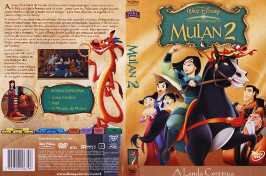

Outro Título:Mulan II
País:United States, 79 minutos
Idiomas falados:Espanhol, Inglês, Português
Gênero(s):Animação, Comédia, Família, Aventura
Diretor(s):Darrell Rooney, Lynne Southerland
Escritor(es):Roger S.H. Schulman, Michael Lucker, Chris Parker
Codec:MPEG-2 (DVD)
Número: 5828


Certificado:L
Sinopse:
O casamento entre Shang e Mulan está para acontecer, quando subitamente são enviados a uma missão secreta: escoltar três princesas chinesas até a Mongólia, com a finalidade de se casarem com príncipes mongóis e selarem a paz entre os dois reinos. Filme produzido diretamente para o mercado caseiro.
Elenco:


Tipo de mídia: DVD5,
Legendas: Espanhol, Inglês, Português, Sem Legendas
Alugado: Não
Tela: Anamorphic Widescreen